What this is about
OpenBao can store its data with raft.
Then every node keeps a full copy of the data. The nodes keep the copies equal by sending messages to each other.
This page explains those messages. Who sends them, when, what is inside, and what happens when something goes wrong.
Use the buttons below, or the ← and → keys. Each step may have a "More detail" section. Open it only if you want to go deeper.
More detail
The protocol comes from the Go library hashicorp/raft (v1.7.3 in OpenBao). Main files: net_transport.go, raft.go, replication.go, commands.go. OpenBao adds the TLS layer in internal/physical/raft/streamlayer.go.
Times on this page use OpenBao's default performance_multiplier = 5.
Three roles
At any moment, one node is the leader. The others are followers.
Only the leader accepts changes. It sends every change to the followers.
If the leader disappears, a follower becomes a candidate. It asks the others to vote for it.
In OpenBao, the raft leader is the active node. The followers are the standby nodes.
More detail
There are two kinds of followers. Voters vote in elections and count for the majority. Non-voters get all the data, but they do not vote.
A new node starts as a non-voter. OpenBao's autopilot makes it a voter when it is healthy.
The log
Every change is one entry in a log. Each entry has an index (1, 2, 3, …) and a term.
The term is the election round number. It goes up by one at every election.
An entry is committed when a majority of voters has stored it. With 3 voters, 2 are enough. With 5 voters, 3 are needed.
A committed entry is never lost. Then each node applies it to its own data.
More detail
Entry types: Command (OpenBao data), Noop (written by a new leader), Barrier, and Configuration (the member list).
In OpenBao, the data of a Command entry is a protobuf LogData message. It holds a list of key/value operations. Large values are split over several entries.
Who connects to whom
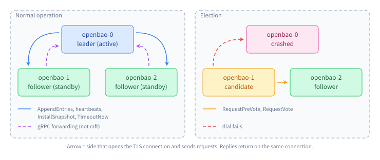
The leader opens a connection to every follower.
A candidate opens a connection to every other voter.
A follower never opens a raft connection to the leader.
The side that opens the connection sends the requests. The other side only answers.
More detail
Two nodes can have connections in both directions at the same time, for example after the roles change. Each connection is still used in one direction only.
One port, two protocols
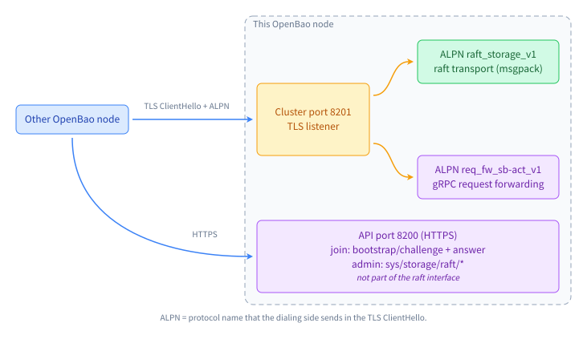
Raft uses the cluster port, 8201 by default.
The same port also carries gRPC. Standby nodes use it to forward client requests to the active node.
Both run inside TLS. In the TLS handshake the dialer names the protocol it wants (ALPN). Raft asks for raft_storage_v1.
Raft itself does not use gRPC. It has its own simple format.
More detail
The listener picks the handler from the negotiated ALPN name (internal/vault/cluster/cluster.go).
Joining a cluster and admin calls (sys/storage/raft/*) go over the normal HTTP API port. They are not part of the raft interface.
TLS
Both sides show a certificate. This is mutual TLS.
All nodes use the same key and certificate. The leader creates it and stores it in raft. A new node gets it when it joins.
So TLS proves "you are a member of my cluster".
It does not prove which member you are. Keep this in mind. It matters later.
More detail
The certificate is self-signed (ECDSA P-521). Its name is raft-<uuid>. It is also its own CA.
The dialer puts the key ID in the TLS server name (SNI). The receiver uses SNI only to choose which key to show.
During key rotation the keyring has two keys. Only the active key is used to dial. Both keys are accepted.
Names and addresses
Each node has a server ID, for example openbao-2. This is its identity in raft.
Each node also has an address (cluster_addr), for example raft-2:8201. This only says where to connect.
The member list, with IDs and addresses, is itself a log entry. So every node knows every other node.
The address is a string. It becomes an IP only when a new connection is opened (DNS lookup).
More detail
Raft passes the address string to OpenBao's dialer. The Go resolver looks it up on each new dial. OpenBao does not cache the answer.
Connections are reused
Opening a TLS connection takes time. So raft keeps open connections in a pool.
Up to 3 idle connections are kept per peer.
In practice, the leader has about 2 connections to each follower. One is for heartbeats and single requests. One is for the replication pipeline (step 15).
A snapshot always uses a fresh connection. It is closed afterwards.
When a request fails, its connection is closed. The next request opens a new one, with a new DNS lookup.
More detail
Each request has a 10 s deadline (OpenBao setting). For a snapshot the deadline grows with its size.
A working connection can stay open for days. It is never looked up in DNS again.
Bytes on the wire
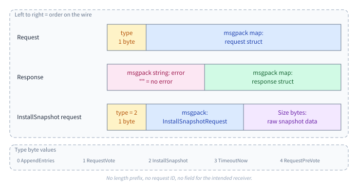
A request is one type byte, then the request struct.
A response is an error text, then the response struct. The error text is usually empty.
Structs are encoded with msgpack. It is like JSON, but binary and smaller.
On one connection, requests are answered one at a time, in order.
More detail
Each struct becomes a msgpack map. The keys are the Go field names. A heartbeat is 128 bytes. Decoded, it looks like this:
{ Addr: "raft-0:8201", Entries: nil, ID: "openbao-0",
Leader: "raft-0:8201", LeaderCommitIndex: 0, PrevLogEntry: 0,
PrevLogTerm: 0, ProtocolVersion: 3, Term: 5 }There is no length prefix and no request ID. The reader knows where a struct ends from the msgpack encoding itself.
Only five requests
| Request | From → to | Purpose |
|---|---|---|
AppendEntries | leader → each follower | New entries, heartbeats, commit index |
RequestPreVote | candidate → voters | "Could I win an election?" |
RequestVote | candidate → voters | The real vote |
InstallSnapshot | leader → one follower | Full copy for a follower that is far behind |
TimeoutNow | leader → one follower | "Start an election now." Used to hand over leadership |
Each request has a matching response. That is the whole protocol.
The next steps show each one in action.
Every message starts with a header
type RPCHeader struct {
ProtocolVersion int // 3 today
ID []byte // server ID of the SENDER
Addr []byte // address of the SENDER
}Every request and every response includes this header.
It says who sent the message. There is no field for who should receive it.
The receiver checks only the protocol version.
More detail
If the version is too old or too new, the receiver answers with an error text. Raft supports one version back, so rolling upgrades work.
Heartbeats
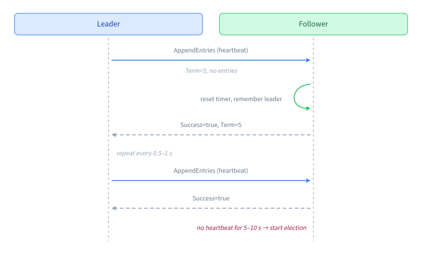
The leader sends an empty AppendEntries to each follower about every 0.5–1 s.
The follower answers. Now both know the other is alive.
If a follower hears nothing for 5–10 s, it starts an election.
More detail
A heartbeat is an AppendEntries with a term, no entries, and zero in PrevLogEntry, PrevLogTerm and LeaderCommitIndex.
The receiver handles heartbeats on a fast path, outside raft's main loop, so slow disk writes do not delay them.
Heartbeats run in their own goroutine per follower, separate from data replication.
Inside AppendEntries
type AppendEntriesRequest struct {
RPCHeader
Term uint64
Leader []byte // old, same as RPCHeader.Addr
PrevLogEntry uint64 // index of the entry just before Entries
PrevLogTerm uint64 // term of that entry
Entries []*Log
LeaderCommitIndex uint64
}
type AppendEntriesResponse struct {
RPCHeader
Term uint64
LastLog uint64 // follower's last index, a hint
Success bool
NoRetryBackoff bool
}
type Log struct {
Index, Term uint64
Type LogType
Data []byte
Extensions []byte
AppendedAt time.Time
}PrevLogEntry and PrevLogTerm describe the entry just before the new ones.
The follower accepts only if it has that same entry. This keeps all logs identical.
A write, from start to end
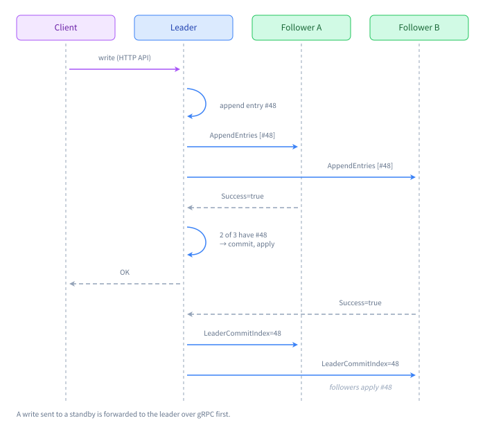
The leader writes the entry to its own log. It sends it to all followers at the same time.
As soon as a majority has the entry, it is committed. The leader applies it and answers the client.
The followers learn about the commit from the next AppendEntries. Then they apply it too.
More detail
If no new writes come, the leader still sends an AppendEntries every 50–100 ms. This way followers learn the commit index fast.
A standby can apply only what it has seen as committed. So a read on a standby can be a little behind the leader.
Pipelining
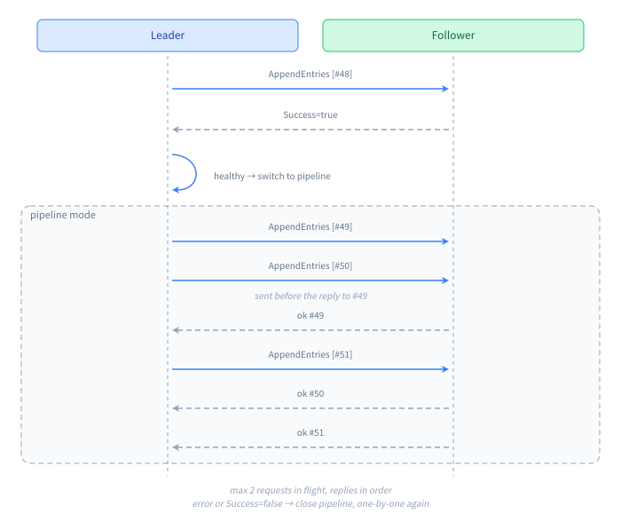
Waiting for every reply is slow.
When a follower is up to date, the leader switches to pipeline mode. It uses its own connection for this.
In pipeline mode the leader sends the next request before the previous reply arrives. Replies come back in the same order.
If anything goes wrong, the pipeline is closed. The leader goes back to one request at a time.
More detail
OpenBao uses the default of 2 requests in flight. The leader logs pipelining replication when it starts and aborting pipeline replication when it stops.
A follower that is behind
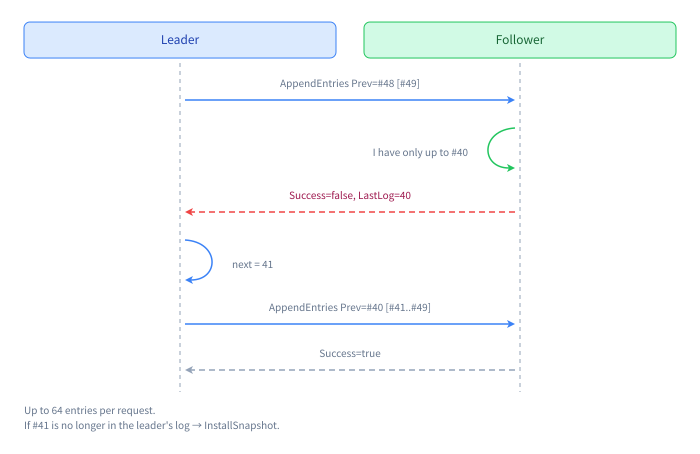
A follower can miss entries, for example while it restarts.
Then the "previous entry" check fails. The follower answers Success=false and tells its last index.
The leader goes back and sends again from there.
More detail
The leader sets next = max(min(next − 1, LastLog + 1), 1).
If the follower has entries with a different term (left over from an old leader), it deletes them and takes the leader's entries.
NoRetryBackoff=true means "try again right away". It is set when the reject is a normal log mismatch.
Far behind: send a snapshot
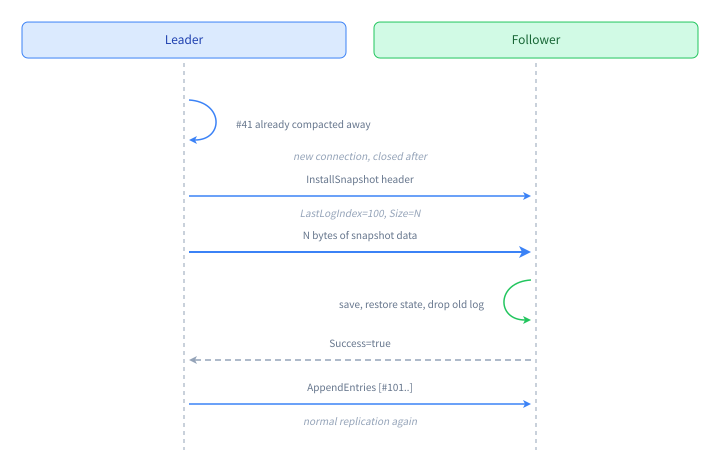
The leader does not keep its log forever. Old entries are replaced by a snapshot of the data.
If a follower needs an entry that is gone, the leader sends the whole snapshot.
First comes a small header. Then the raw snapshot bytes follow on the same connection.
type InstallSnapshotRequest struct {
RPCHeader
SnapshotVersion int
Term uint64
Leader []byte
LastLogIndex uint64 // snapshot covers up to here
LastLogTerm uint64
Peers []byte // old
Configuration []byte // member list
ConfigurationIndex uint64
Size int64 // number of raw bytes that follow
}
type InstallSnapshotResponse struct {
RPCHeader
Term uint64
Success bool
}More detail
OpenBao decides when to compact the log (snapshot_threshold, trailing_logs, snapshot_interval).
The follower does not fill in RPCHeader in this response, so it is empty.
The leader disappears: election
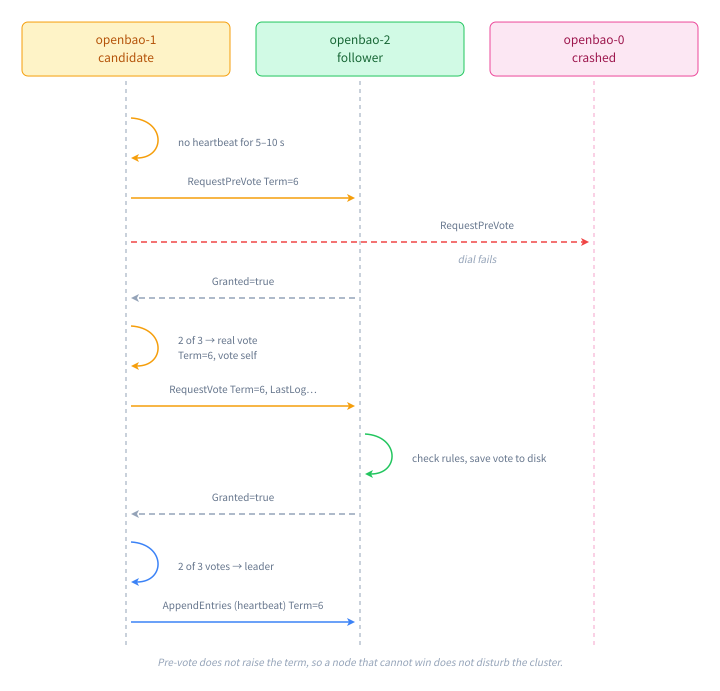
A follower that hears nothing waits 5–10 s. Then it becomes a candidate.
First it asks a pre-vote: "Would you vote for me?" Nothing changes yet.
If a majority says yes, the real election starts. The candidate raises the term and votes for itself. It sends RequestVote.
With a majority of votes, it is the new leader. It sends heartbeats right away.
type RequestPreVoteRequest struct {
RPCHeader
Term, LastLogIndex, LastLogTerm uint64
}
type RequestVoteRequest struct {
RPCHeader
Term, LastLogIndex, LastLogTerm uint64
Candidate []byte // old
LeadershipTransfer bool // step 20
}
// both responses: { RPCHeader, Term uint64, Granted bool }More detail
The wait is random, so two followers rarely start at the same time.
If nobody wins within 5–10 s, the candidate starts again.
A new leader first writes a Noop entry. It cannot know what is committed until an entry of its own term is committed.
When OpenBao starts, the first timeouts are 3 times longer. This gives all nodes time to come up.
How a node decides its vote
A node says no when:
- it still hears from a leader (except during a handover),
- the candidate is not in the member list, or is not a voter,
- the candidate's term is older than its own,
- its own log is newer than the candidate's log.
A node votes only once per term. It saves the vote to disk before it answers.
Any reply with a higher term makes a candidate or leader go back to follower.
More detail
The "I still have a leader" check comes first. So a node that is cut off can ask for votes forever. It does not disturb the others, but it also never gets back in by itself.
If the voter already voted for the same candidate in this term, it says yes again and logs duplicate requestVote.
A planned leader change
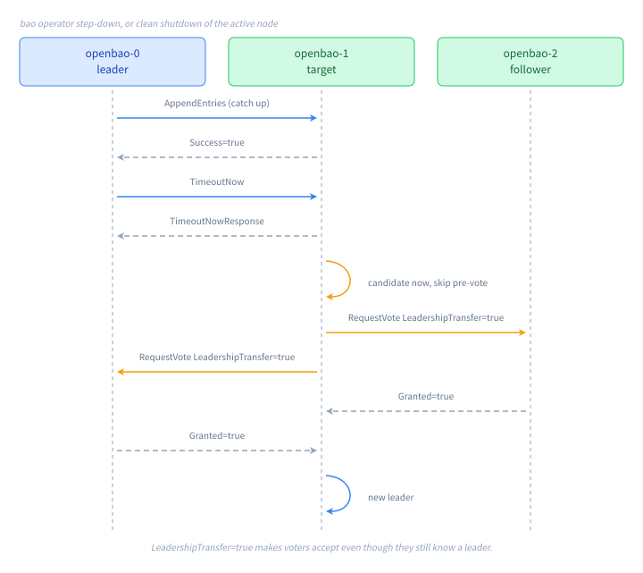
When the active node steps down, raft hands the leadership over. This happens with bao operator step-down or a clean shutdown.
The leader picks the most up-to-date follower. It makes sure that follower has every entry. Then it sends TimeoutNow.
The target starts an election at once. LeadershipTransfer=true makes the others vote, even though they still know a leader.
TimeoutNow carries only the header. Its response is empty.
More detail
A leader that is killed (for example with SIGKILL) cannot do this. Then the followers must wait 5–10 s for a normal election.
A new node joins
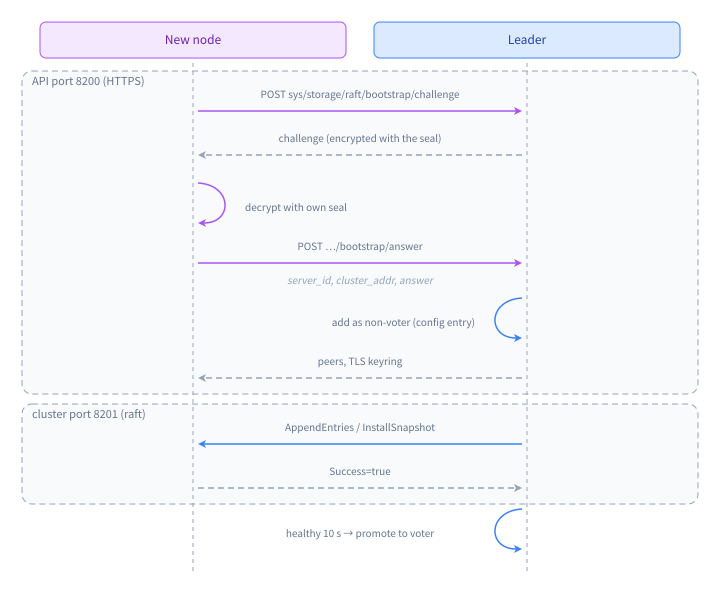
Joining does not use the raft protocol. It uses the normal HTTP API.
The new node proves it has the same seal by decrypting a challenge.
The leader adds the node to the member list as a non-voter. It gives the node the shared TLS key.
From now on, the leader connects to the new node's cluster_addr and sends raft messages.
More detail
After the node has been healthy for 10 s (default), autopilot promotes it to voter. This is another member list entry.
Removing a node (sys/storage/raft/remove-peer) is also a member list entry. The leader then stops sending to it.
When a request fails
| What happens | What the sender does |
|---|---|
| Cannot connect, TLS fails, or no answer in 10 s | Closes the connection. Tries again later. The peer counts as "not reached". |
| Reply has an error text | Keeps the connection. Treats it as a failure. This is rare. |
Success=false | Goes back in the log and tries again (step 16). |
Granted=false | No vote from this node. |
| Reply has a higher term | A leader or candidate becomes a follower. |
| Problem in the pipeline | Closes the pipeline. One request at a time again. |
| Receiver cannot decode a request | Receiver closes the connection. |
The transport never retries by itself. The raft logic above it decides when to try again.
More detail
Most "no" answers are not errors. They are normal replies with Success or Granted set to false.
Error texts are used for things like an unsupported protocol version or a failed snapshot restore.
Waiting between tries
After a failure, the sender waits before it tries again. The wait doubles each time.
- Heartbeats: 10 ms, 20 ms, 40 ms, … up to 2.5 s.
- Sending entries: 10 ms, 20 ms, … up to about 10 s.
- Votes: not repeated. The next election round asks again.
So a node that is down does not cause a busy loop.
Each new try can open a new connection. So each try also does a new DNS lookup.
A leader that loses the majority
The leader keeps checking how many voters answered in the last 2.5 s.
If that is less than a majority, it steps down and becomes a follower.
This stops a leader that is cut off from the others from acting as leader forever.
In OpenBao, that node then stops being the active node.
The timers
| Timer | Default in OpenBao |
|---|---|
| Heartbeat interval | 0.5–1 s |
| Follower gives up on the leader | 5–10 s |
| One election round | 5–10 s |
| Leader must reach a majority within | 2.5 s |
| One request | 10 s |
| Commit index update without new writes | 50–100 ms |
| First timeouts after start-up | 3 × longer |
More detail
performance_multiplier (default 5) multiplies the heartbeat timeout, election timeout and leader lease. The base values are 1 s, 1 s and 0.5 s.
"5–10 s" is a random time between the timeout and twice the timeout.
What the protocol does not check
![The leader openbao-0 dials raft-2 and gets an old DNS answer, 10.244.0.12, which now belongs to openbao-1. It sends AppendEntries meant for openbao-2 to openbao-1. openbao-1 sees a valid TLS certificate and a valid leader and accepts. It replies Success true with ID openbao-1. The leader does not check the ID and counts the reply as coming from openbao-2. The real openbao-2 at 10.244.0.30 is never contacted. Fix: compare the reply ID with the peer that was dialed, drop the connection and dial again.](assets/seq-misroute.svg)
Put three earlier facts together:
- A request names only the sender (step 11).
- TLS proves membership, not identity (step 6).
- A working connection is never looked up again (step 8).
Now say a DNS name still points to an old IP, and that IP now belongs to another member. The leader reaches the wrong node. That node answers normally.
The leader does not check the ID in the reply. So it counts the wrong node as the right one. The real node is left out, and stays out.
More detail
The wrong node is also counted twice, in votes and in commits. With 3 nodes this hurts availability. With 5 or more nodes it can break safety.
The fix is small. When a reply arrives, compare RPCHeader.ID with the server the request was meant for. If they differ, close the connection. The next try does a new DNS lookup.
Summary
- Raft runs on the cluster port, inside TLS, with ALPN
raft_storage_v1. - The leader connects to followers. Candidates connect to voters. The dialer asks, the other side answers.
- A message is a type byte plus a msgpack struct. A reply is an error text plus a msgpack struct.
- Five requests: AppendEntries, RequestPreVote, RequestVote, InstallSnapshot, TimeoutNow.
- Heartbeats every 0.5–1 s. Elections after 5–10 s of silence.
- Failures close the connection. The next try opens a new one and does a new DNS lookup.
- Headers name the sender only. Nobody checks that the right node answered.